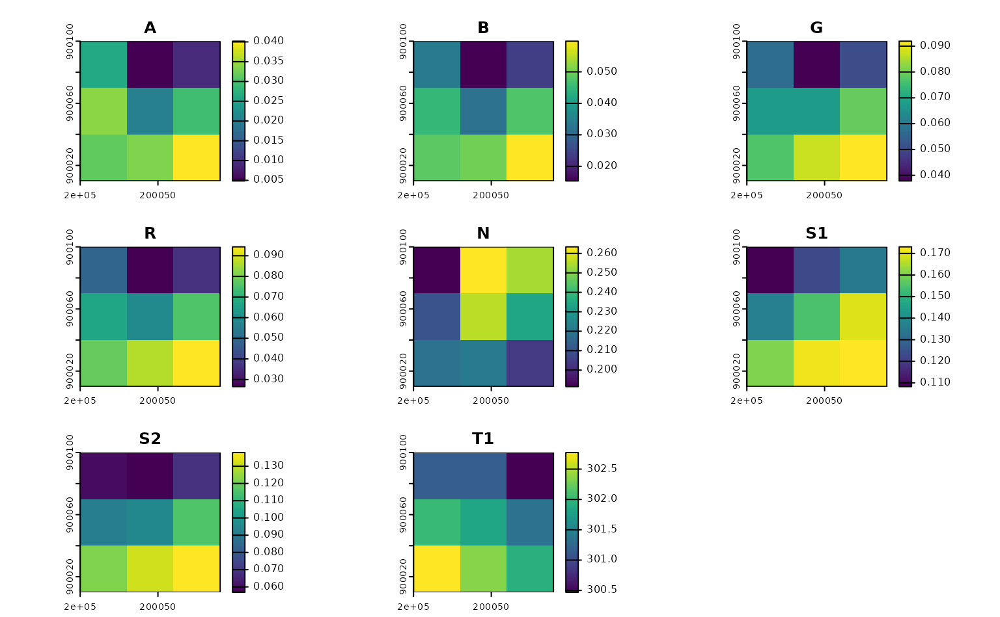
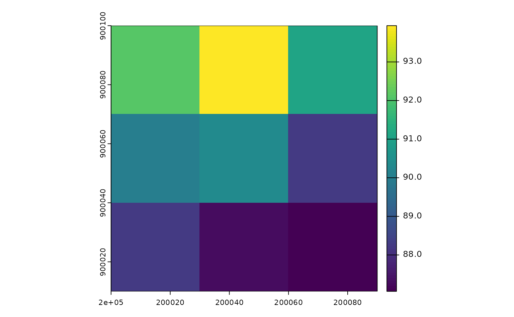
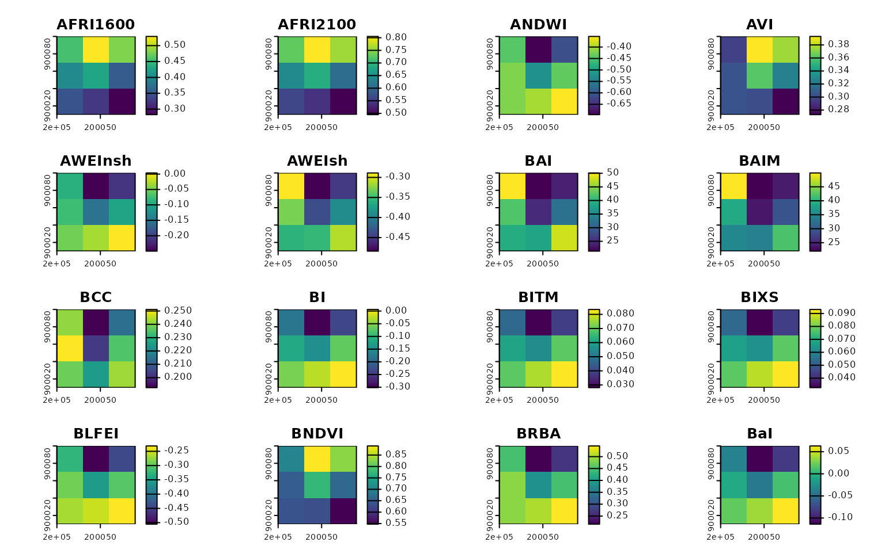
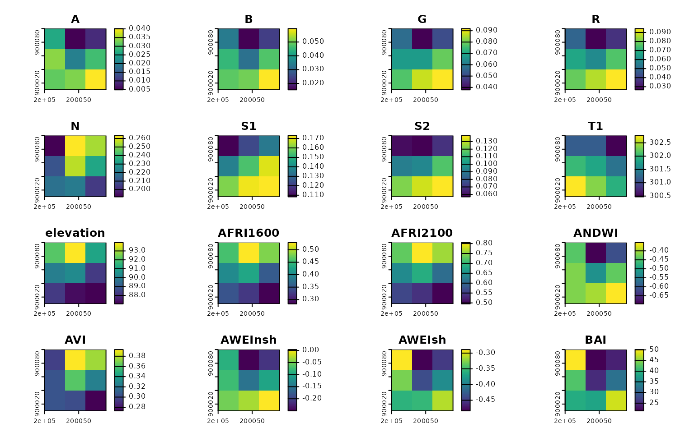

The rsi package aims to help you download data from STAC APIs, to compute spectral indices from data, and to handle a handful of other spatial data wrangling tasks. This vignette walks through the main features of the package. Let’s start off by loading the package:
In order to download data from a STAC API, we’re going to need to specify both a spatial and temporal area of interest. To define our spatial area of interest, we’ll first mock up a small bounding box in northern Massachusetts (in a planar CRS appropriate for the region):
our_aoi <- sf::st_bbox(
c(xmin = 200000, ymin = 900000, xmax = 200100, ymax = 900100),
crs = 26986
)
our_aoi <- sf::st_as_sf(sf::st_as_sfc(our_aoi))
sf::st_area(our_aoi)
#> 10000 [m^2]
plot(sf::st_geometry(our_aoi))This is the area we’re going to download and process data for.
Out of the box, rsi includes a number of functions to make it easy to
download the most popular data sets from public STAC APIs. For instance,
the get_landsat_imagery() has a number of default arguments
for downloading Landsat 8 and 9 imagery from Microsoft’s Planetary
Computer. We’ll pass our spatial area of interest along with a timeframe
to this function, in order to get a cloud-masked composite image of all
Landsat acquisitions for our spatiotemporal window. Let’s grab all the
imagery from September 2023:
our_imagery <- get_landsat_imagery(
our_aoi,
"2023-09-01",
"2023-09-30",
output_filename = tempfile(fileext = ".tif")
)
our_imagery
#> [1] "/tmp/RtmpMWQXIv/file2783626b7201.tif"If we wanted to, we could use future::plan() here to
specify a parallelization methodology to speed up downloads by using
multiple threads. We could also use progressr::handlers()
to get a progress bar to report our download status.
By default, get_landsat_imagery() will download a
composite of all bands available in Landsat 8 and 9 imagery for our
timeframe:

Notice that this composite has been cloud-masked (using the QA pixel band) and rescaled (using the scale and offset specified in metadata provided by the STAC endpoint) automatically. You can control these behaviors via function arguments.
We’re also able to use rsi to download other data sets – for
instance, we could also grab a DEM for this area from Planetary
Computer, using the get_dem() function:

Under the hood, both of these functions (and their friends,
get_sentinel2_imagery() and
get_sentinel1_imagery()) are powered by a lower-level
get_stac_data() function, which should theoretically work
with any imagery provided by any STAC API, anywhere. These functions
simply provide user-friendly defaults to make it faster to get the data
you care about.
In addition to these STAC-focused data-downloading functions, rsi
also has an interface to the Awesome
Spectral Indices project via the spectral_indices()
function:
spectral_indices() |>
head()
#> # A tibble: 6 × 9
#> application_domain bands contributor date_of_addition formula long_name
#> <chr> <list> <chr> <chr> <chr> <chr>
#> 1 vegetation <chr [2]> https://githu… 2021-11-17 (N - 0… Aerosol …
#> 2 vegetation <chr [2]> https://githu… 2021-11-17 (N - 0… Aerosol …
#> 3 water <chr [6]> https://githu… 2022-09-22 (B + G… Augmente…
#> 4 vegetation <chr [2]> https://githu… 2021-09-20 (1 / G… Anthocya…
#> 5 vegetation <chr [3]> https://githu… 2022-04-08 N * ((… Anthocya…
#> 6 vegetation <chr [4]> https://githu… 2021-05-11 (N - (… Atmosphe…
#> # ℹ 3 more variables: platforms <list>, reference <chr>, short_name <chr>This function attempts to grab the newest version of the spectral indices JSON file from the ASI repo, and then stores that data in a cache folder on your computer. If the downloading fails, the package will fall back (with a warning) to use your possibly outdated cache instead; if you don’t have a cache and can’t download the files, the package will instead (with a different warning) resort to using a packaged version of the indices file. This ensures that you’re always getting the latest and greatest version of the ASI list possible, but that the package can still be used without an internet connection.
There are also functions in rsi to sort through the ASI list of
indices. For instance, the filter_platforms() function can
be used to, well, filter the list to only indices that can be calculated
from a given platform. For instance, to filter to only indices that can
be calculated using data from Landsat’s Operational Land Imager:
filter_platforms(platforms = "Landsat-OLI") |>
head()
#> # A tibble: 6 × 9
#> application_domain bands contributor date_of_addition formula long_name
#> <chr> <list> <chr> <chr> <chr> <chr>
#> 1 vegetation <chr [2]> https://githu… 2021-11-17 (N - 0… Aerosol …
#> 2 vegetation <chr [2]> https://githu… 2021-11-17 (N - 0… Aerosol …
#> 3 water <chr [6]> https://githu… 2022-09-22 (B + G… Augmente…
#> 4 vegetation <chr [4]> https://githu… 2021-05-11 (N - (… Atmosphe…
#> 5 vegetation <chr [4]> https://githu… 2021-05-14 sla * … Adjusted…
#> 6 vegetation <chr [2]> https://githu… 2022-04-08 (N * (… Advanced…
#> # ℹ 3 more variables: platforms <list>, reference <chr>, short_name <chr>There’s an equivalent function to filter indices based upon the bands that require. For instance, we can filter the list to only indices that use the red and blue band of images:
filter_bands(bands = c("R", "B"))
#> # A tibble: 2 × 9
#> application_domain bands contributor date_of_addition formula long_name
#> <chr> <list> <chr> <chr> <chr> <chr>
#> 1 vegetation <chr [2]> https://githu… 2022-04-08 (R - B… Kawashim…
#> 2 vegetation <chr [2]> https://githu… 2022-04-08 (R^2.0… Modified…
#> # ℹ 3 more variables: platforms <list>, reference <chr>, short_name <chr>Arguments to these functions let you control whether you’re looking for indices that match all platforms and bands you’ve specified, or any of them.
But rsi doesn’t simply make these formulas available in R, it also
helps you compute these indices from imagery, via the
calculate_indices() function. This function takes your
imagery and a subset of spectral_indices() as arguments,
and creates a raster containing all of those indices as an output. We
can use filter_bands() to quickly get a list of the indices
we can compute from our Landsat imagery, and then
calculate_indices() to compute all 128 of those indices
from our images:
our_indices <- calculate_indices(
our_imagery,
filter_bands(bands = names(terra::rast(our_imagery))),
"our_indices.tif"
)
#> Warning in x@cpp$writeStop(): GDAL Message 1: our_indices.tif: Metadata
#> exceeding 32000 bytes cannot be written into GeoTIFF. Transferred to PAM
#> instead.
terra::rast(our_indices) |>
terra::plot()
Note that calculate_indices() is evaluating the formulas
in the formula column of the spectral indices data frame as
if they were code. These formulas are evaluated inside of a very limited
environment, which doesn’t have access to the global environment or most
R fixtures, which does reduce the amount of harm malicious code
could do:
evil_index <- spectral_indices()[1, ]
evil_index$formula <- "base::system('echo OHNO')"
try(
calculate_indices(
our_imagery,
evil_index,
tempfile(fileext = ".tif")
)
)
#> Error in base::system : could not find function "::"But it’s worth scanning your formulas before running
calculate_indices(), just to make sure you aren’t going to
be accidentally running something surprising!
Last but not least, rsi also provides a way to combine disparate data sets covering the same geographic region into a single VRT, quickly creating a file that you can treat as a single raster without taking up much additional storage space. This is a great way to create predictor bricks from your indices and downloaded data which you can then use for model fitting and prediction:
combined_layers <- stack_rasters(
c(our_imagery, our_dem, our_indices),
tempfile(fileext = ".vrt")
)
terra::rast(combined_layers) |>
terra::plot()